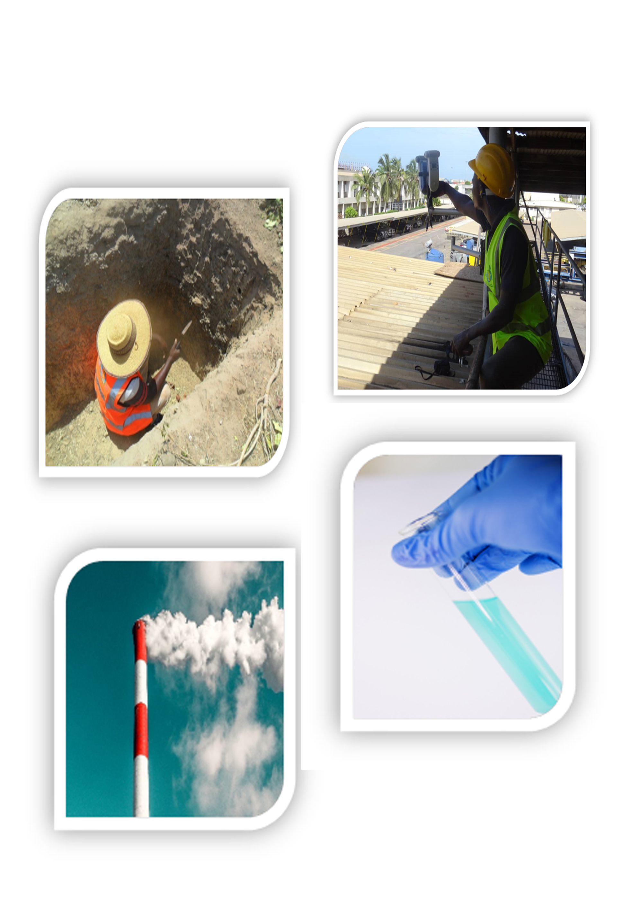

| Some of Our Past Projects | ||
|---|---|---|
| Year | Client | Project |
| 2021 | Kumasi City Mall | Environmental Media Monitoring for Dust (PM10, PM2.5), Noise,and Gases (SO2, NO2) |
| 2021 | Accra Mall | Environmental Media Monitoring for Dust (PM10, PM2.5), Noise, and Gases (SO2, NO2) |
| 2021 | PETROSOL Ghana | Air Quality Assessment at selected fuel stations |
| 2021 | Kingsperp Mining Limited | Environmental Media Monitoring for Dust (TSP, PM10, PM2.5), Noise, Gases (SO2, NO2), and Surface Water Analysis |
| 2020 | Ghana Oil Palm Development Corporation (GOPDC) | Environmental Media Monitoring for Dust (TSP, PM10, PM2.5), Noise, Gases (SO2, NO2), Metals (Fe, Pb, Hg), Stack (TPM, SO2, NO2) |
| 2020 | Directorate of Research Innovation and Consultancy (DRIC), Univ. of Cape Coast | Gaseous emission monitoring for (CH4, SO2, NO2, CO, CO2) from two landfill sites in Ghana |
| 2020 | IronRidge Resources Limited | Environmental Media Monitoring for Dust (TSP, PM10, PM2.5), Noise, Gases (SO2, NO2), Surface and Groundwater |
| 2020 | Akosombo Industrial Company Limited | Environmental Media Monitoring for Dust (TSP, PM10, PM2.5), Gases (NO2, SO2) and Stack Emissions (TPM, SO2, NO2) |
| 2020 | Heidelberg Cement Group (Ghacem) | Environmental Media Monitoring for ambient gases (NO2, SO2) and Stack Emissions (TPM, SO2, NO2) at their Tema Plant Factory SIte. |
| 2020 | Midland International Company | Environmental Media Monitoring for Dust (PM2.5, PM10), Noise and Gases (SO2, NO2, VOC). |
| 2020 | Avnash Company Ltd - (Edible oil section) | Periodic Environmental Media Monitoring for Noise, Dust (TSP, PM10), Gases (NO2, SO2) and Stack Emission for their edible oil production processes |
| 2020 | Cosmo Seafood Ltd | Routine monitoring of Environmental Media levels for Noise, Dust (TSP, PM10), Gases (NO2, SO2), Effluent and Stack Emission for their edible oil production factory |
| 2020 | Yara Company Limited | Environmental Media Monitoring for Noise, Dust (PM2.5, PM10) and Gases (NO2, SO2) for their fertilizer production facility |
| 2020 | Tema Fuel Company Ltd | Environmental Media Monitoring for Bulk Oil/Fuel Storage Facility Report submitted to the EPA as an addendum to an Environmental Management Plan for the renewal of Environmental Permit of Operations. |
| 2020 | Azar Chemical Industries Limited | Environmental Media Monitoring for Noise, Dust (TSP, PM10), Gases (NO2, SO2) and for the paint production processes |
| 2020 | Synrez Industries, Ghana Limited | Environmental Media Monitoring for Noise, Dust (TSP, PM10), Gases (NO2, SO2) and Stack Emission for their chemical production processes |
| 2020 | Kasapreko Company Ltd | Environmental Media Monitoring for Alcoholic Beverage Company Report submitted in Compliance with Akoben Ratings by the Environmental Protection Agency |
| 2019 | Harlequin Oil & Gas Company | Environmental Media Monitoring for Dust (TSP, PM10, PM2.5), Noise, Gases (SO2, NO2), Metals (Fe, Pb, Hg), Stack (TPM, SO2, NO2) |
| 2019 | West African Forgings Ltd | Environmental Media Monitoring for Dust (TSP, PM10), Gases (NO2, SO2) and Noise for their Production Site |
| 2019 | Samartex Timber and Plywood Co. Ltd | Environmental Media Monitoring for Dust (TSP, PM10, PM2.5), Gases (CO, NO2, SO2) and Stack Emission at their Plant Site at Samreboi-Western Region |
| 2019 | DH Industries | Environmental Media Monitoring for Dust (TSP/PM10), Noise, Gases (SO2, NO2) and Stack Emission Data required for the preparation of an Environmental Management Plan |
| 2018 | Nii-Oman Mensah Quarry Ltd | Environmental Media Monitoring for Dust (TSP, PM10) and Noise for the preparation of an Environmental Management Plan |
| 2018 | Cardinal Resources Ltd | Air Quality (TSP, PM10, NO2 and SO2), Noise and Water Quality Assessment for Large Scale Surface Gold Mining as part of baseline information for an EIA study |
| 2018 | Kantanka Automobile Company | Air Quality Assessment (TSP/PM10, Noise, NO2, SO2) as part of Environmental Monitoring in fulfillment of Permit schedules |
| 2018 | Modern KOSA Quarry | Environmental Media Monitoring for Dust (TSP, PM10), and Noise for their Annual Environmental Report and Environmental Management Plan |
| 2017 | Kibi Goldfields Ltd | Base-line studies of Dust (TSP, PM10), Noise and Gases (NO2, SO2) in preparation of EIA report |
| 2017 | A&L Quarry and Concrete Products Ltd | Air Quality Assessment (TSP, PM10) and Noise as part of baseline information for the preparation of an Environmental Impact Assessment for a proposed quarry at Awutu Akubrifa in the Awutu Senya District. |
| 2017 | Cares Ghana Ltd | Monitoring and determination of ambient air quality with respect to SO2, NO2, CO, VOCs, and TSP/PM10 concentrations as part of the Tema Harbour expansion project |
| 2017 | Cosmo Seafood Ltd | Monitoring of Carbon Monoxide Levels from a Forklift machine to determine its safety compliance to the national permissible level |
| 2017 | GOKAY Quarry Ltd | Preparation of the 2016 Annual Environmental Report for the Company's operations |
| 2016 | Kofi Ababio & Sons Company Ltd | Environmental Media Monitoring for a Detergent production factory in the Greater Accra Region |
| 2016 | Cedar Quarry Ltd | Air Quality Assessment (TSP/PM10, Noise) as part of baseline study for the preparation of Environmental and Social Management Plan |
| 2016 | Eastern Quarries Limited | Environmental Media Monitoring for Dust (TSP, PM10) and Noise levels for the company’s operations |
| 2016 | Rolider Company Limited | Environmental Media Monitoring for Dust (TSP, PM10) and Noise as part of an Environmental Baseline Study for the preparation of an Environmental Management Plan |
- (+233) 503 316 772/ 599 753 668
- info@nemasconsult.com
Environmental Media Quality and Surveillance (EMQS)
- Home
- Projects
- EMQS

The EMQS Unit of NEMAS Consult has some of the latest Environmental Media Monitoring Equipment, for Dust measurement (PM10, PM2.5 and TSP); Noise measurement (Integrated noise, Background noise, Nuisance noise, Minimum, Maximum and Average noise); Gas measurement (CH4, SOx, NOx, VOCs, CO, etc.); Stack emissions measurement (TPM, SO2, NO2, Speed, Flow, Pressure and Fuel efficiency); and Atmospheric Heavy Metals surveillance. The company also has water quality analysis facilities, including Photometers, Incubators, pH meters, Conductivity meters, and Turbidity meters, capable of both in-situ and off-site water and waste water quality determination.
All sampling sites, physical space for facilities, and sensitive receptors that come under study within the area of influence for any assignment are geo-referenced, using a robust, rugged, high-performance Global Positioning System (GPS).